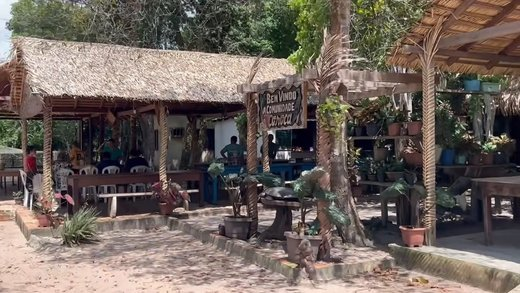

00:00:37.033
Malocas cobertas de palha, com bancos e vasos de plantas à sombra.
Vila Coroca, rio Arapiuns, Santarém (PA) · confirmado
O apresentador identifica Vila Coroca e explica que o grupo parou para almoçar.
Transcrição · 00:00:28 | 00:00:38
Turismo Aqui — quadro de vídeo publicado no YouTube